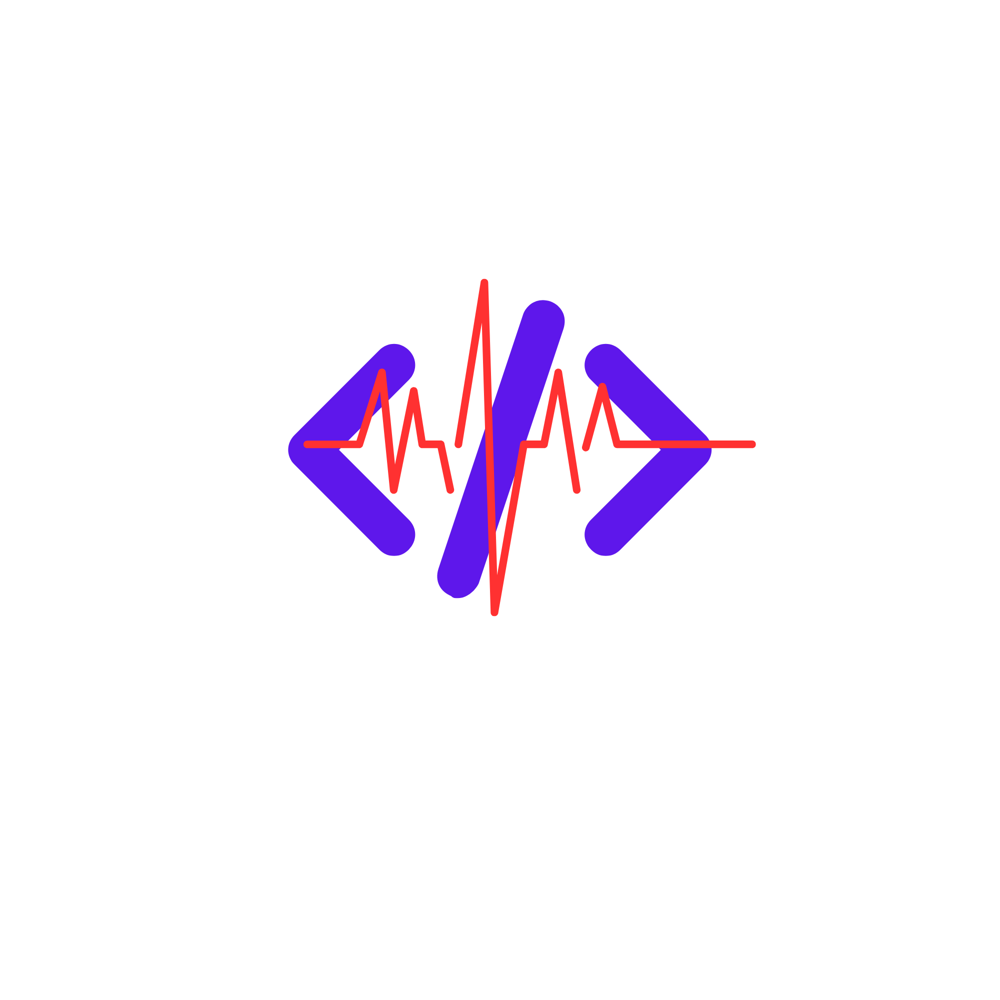

A high-performance full-stack web application designed to translate complex GitHub contribution data into an intuitive "Coding DNA" profile. By bridging raw metadata with meaningful visualization, the platform provides developers with a clear overview of their technical identity and language proficiency.
Dev Pulse Pro analyzes your GitHub repository history to calculate a unique "Developer Persona" and generates interactive radar charts showcasing your technical language distribution across all projects.
Try Live Demo
Modern JavaScript library for building responsive, interactive dashboard interfaces with component-based architecture
Client-side logic for data manipulation, interactivity, and dynamic chart rendering
High-performance backend API that fetches GitHub metadata, processes data, and calculates developer personas
Real-time integration with GitHub for live user statistics, repositories, languages, and contribution data
Automatically analyze your tech stack to assign a unique developer persona (e.g., Cross-Platform Architect, Frontend Specialist) based on language proficiency.
Visualize your language distribution across all repositories with a 360-degree interactive radar chart for instant proficiency overview.
Dynamically fetch star counts, fork history, and repository descriptions for always-current portfolio data without manual updates.
Professional deployment architecture with Vercel for frontend and Render for Python backend, ensuring scalability and performance.
In-depth analysis of your repositories including contributor counts, commit frequency, and technical influence metrics.
Generate and share your unique coding DNA profile with recruiters, teams, and the developer community.
Let's discuss how I can help bring your project to life
Get in Touch Back to Portfolio